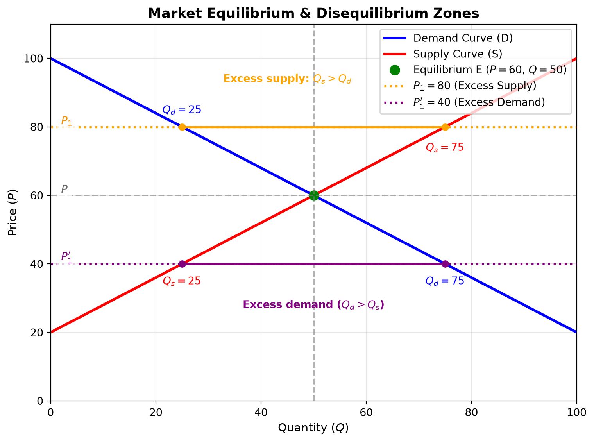
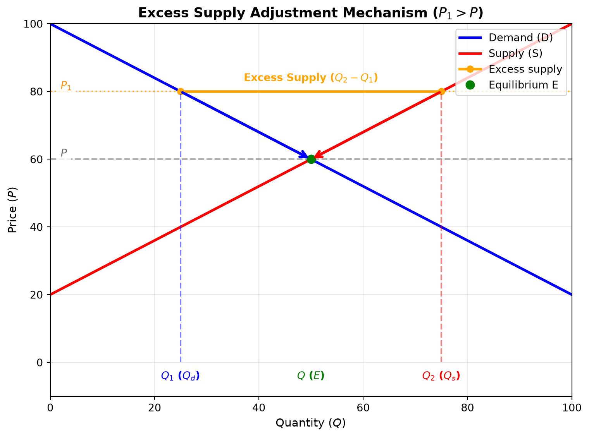
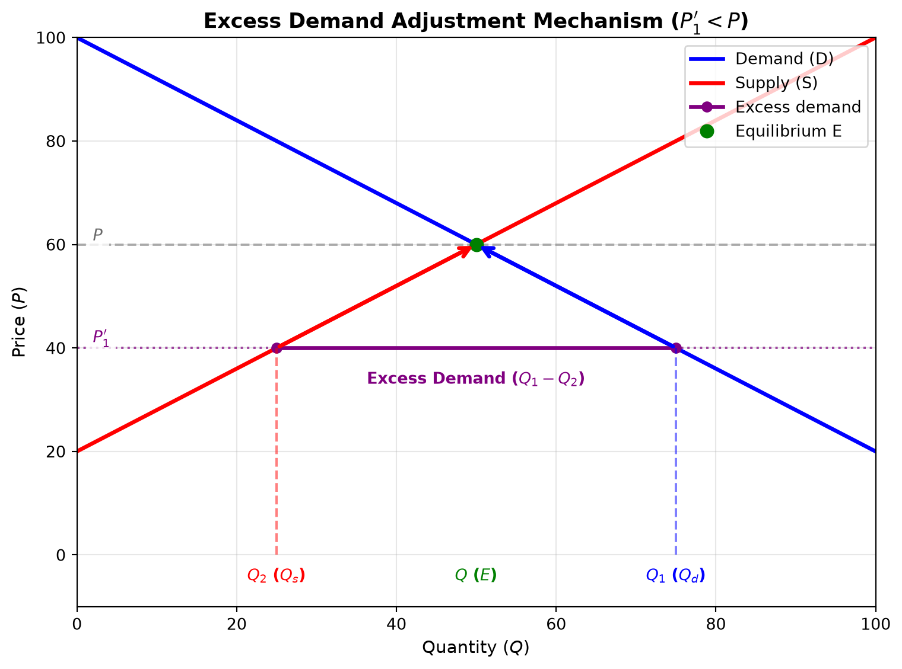
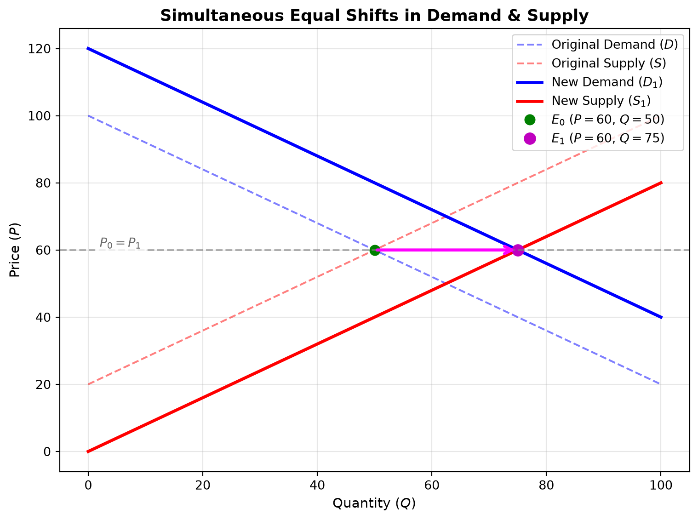

The interaction of demand and supply - The equilibrium
Introduction & Core Concepts
In previous sessions, demand and supply were examined in isolation. This lecture brings them together in a graphical framework for explaining how markets can clear and how prices may respond to imbalances.
The Price Mechanism
- The role of price: At a given price, suppliers choose how much to offer and consumers choose how much to buy. Price is an important coordinating signal, although real markets can also adjust through non-price mechanisms such as queues, rationing, and contracts.
- Movements vs. Shifts:
- A change in the good’s own price causes a movement along the existing supply or demand curve, assuming other factors are unchanged.
- Non-price determinants (e.g., changes in income, preferences, input costs, technology, related goods) cause entire curves to shift.
Market Equilibrium & Dynamic Disequilibrium
Market Equilibrium
In the basic model, market equilibrium is the price and quantity at which planned quantity supplied equals planned quantity demanded.
\[ \text{At equilibrium } E: \quad Q_s = Q_d = Q \quad \text{at price } P \]
- Market-clearing price (\(P\)): The price at which planned quantity supplied equals planned quantity demanded.
- Equilibrium quantity (\(Q\)): The quantity bought and sold at price \(P\), if the market clears.
Real-World Dynamic Disequilibrium
Textbook diagrams show equilibrium as a point of balance. Actual markets can be away from equilibrium, and adjustment is not necessarily immediate or automatic.
- Adjustment takes time: Information, production, and contracting take time, so observed prices and quantities may differ from their equilibrium values.
- Convergence is conditional: The basic supply-and-demand model predicts pressure toward equilibrium when prices can adjust and its assumptions hold. Price controls, market power, and other frictions can alter or prevent that adjustment. Equilibrium is not by itself a guarantee of an efficient outcome.
- What affects adjustment: Price elasticity of supply matters, but adjustment also depends on demand responsiveness, time lags, information, and market institutions.
Step-by-Step Disequilibrium Adjustments
Case 1: Excess Supply (Market Surplus)
1. Initial Market Conditions & Price Expectations
- Price above equilibrium (\(P_1 > P\)): At price \(P_1\), suppliers plan to offer more than consumers plan to buy.
- Class Examples: A tomato farmer assuming tomatoes will fetch 100 Rs/kg, or a computer manufacturer building stock expecting a selling price of 1,000,000 Rs per laptop.
- Quantity supplied (\(Q_2\)): At \(P_1\), producers plan to supply \(Q_2\).
- Quantity demanded (\(Q_1\)): At \(P_1\), consumers plan to buy \(Q_1\).
- Market surplus: Because \(Q_2 > Q_1\), planned excess supply is \(Q_2 - Q_1\).
2. Market Adjustment Mechanism
- Inventory Accumulation: Unsold stock piles up in warehouses and retail outlets.
- Price reductions: Sellers may cut prices to sell excess stock, moving the market price downward from \(P_1\) toward \(P\).
- Simultaneous Movements Along Curves:
- Along the demand curve: As price falls, quantity demanded increases from \(Q_1\) to \(Q\).
- Along the supply curve: As price falls, quantity supplied decreases from \(Q_2\) to \(Q\).
- Restoring balance: Under the model’s assumptions, these changes reduce the surplus as the market moves toward equilibrium \(E\) at \((P, Q)\).

Case 2: Excess Demand (Market Shortage)
1. Initial Market Conditions
(Note: To maintain consistent notation across both diagrams, \(Q_1\) represents quantity demanded and \(Q_2\) represents quantity supplied.)
- Price below equilibrium (\(P_1' < P\)): The market price \(P_1'\) is below the clearing price \(P\).
- Quantity demanded (\(Q_1\)): At \(P_1'\), consumers plan to buy \(Q_1\).
- Quantity supplied (\(Q_2\)): At \(P_1'\), producers plan to supply \(Q_2\).
- Market shortage: Because \(Q_1 > Q_2\), planned excess demand is \(Q_1 - Q_2\).
2. Market Adjustment Mechanism
- Stockouts & Competition: Retailers quickly run out of stock as buyers compete for limited units.
- Price increases: If prices can adjust, competition among buyers may push the price upward from \(P_1'\) toward \(P\).
- Simultaneous Movements Along Curves:
- Along the supply curve: Higher prices encourage producers to increase quantity supplied from \(Q_2\) to \(Q\).
- Along the demand curve: Higher prices lead consumers to reduce quantity demanded from \(Q_1\) to \(Q\).
- Restoring balance: Under the model’s assumptions, these changes reduce the shortage as the market moves toward equilibrium \(E\) at \((P, Q)\).

Numerical Table & Market Schedule
The lecture illustrated dynamic price convergence using the following schedule:
| Price (Rs) | Quantity Supplied (\(Q_s\)) | Quantity Demanded (\(Q_d\)) | Market State | Market Adjustment Force |
|---|---|---|---|---|
| 1,600 | 5,000 units | 3,000 units | Excess Supply (+2,000) | Unsold inventory can put downward pressure on price (↓) |
| 1,500 | 4,500 units | 3,500 units | Excess Supply (+1,000) | Surplus can put downward pressure on price (↓) |
| 1,400 | 4,000 units | 4,000 units | Market Equilibrium | Market clears (\(Q_s = Q_d\)) |
| 1,300 | 3,500 units | 4,500 units | Excess Demand (+1,000) | Shortage can put upward pressure on price (↑) |
| 1,200 | 3,000 units | 5,000 units | Excess Demand (+2,000) | Shortage can put upward pressure on price (↑) |
Non-Price Factors & Simultaneous Curve Shifts
When non-price factors change, the baseline demand or supply curves shift position.

Special Case: Identical Magnitude Rightward Shifts
- Scenario: Non-price factors shift demand right from \(D\) to \(D_1\) and supply right from \(S\) to \(S_1\) by the same horizontal amount at every price.
- Outcome: The new equilibrium point moves horizontally from \(E_0\) to \(E_1\).
- Equilibrium quantity: In this example, increases from \(Q_0 = 50\) to \(Q_1 = 75\).
- Equilibrium price: Remains unchanged at \(P_0 = P_1 = 60\), because the demand and supply curves are parallel and shift horizontally by the same amount. Equal shifts do not generally leave price unchanged if the curve slopes or shift sizes differ.